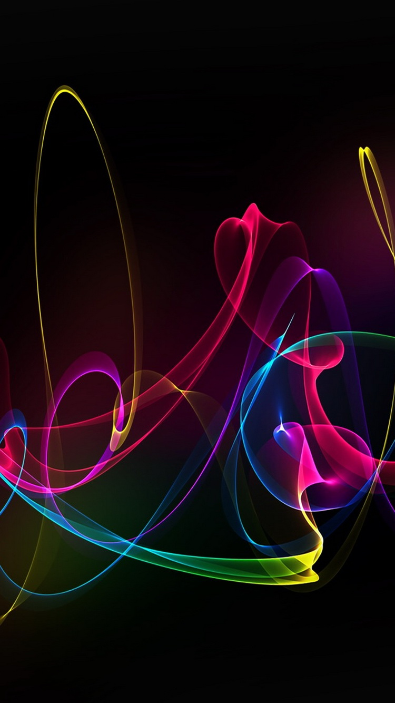

<ons-page>
<span class="grad1">
     <ons-navigator title="Navigator" var="homeNavigator">    
     <ons-row>
         <ons-col align="right">
  <div class="right"><button class="button button--quiet" style="color: #0BD318"
  ng-click="homeNavigator.pushPage('tabbarPage.html', { animation : 'lift' } )">Skip

  </button>

  </div>

  
           
         </ons-col>
         
     </ons-row>
    
   <div class="blur">
      
    </div>
    <br />
    <br />
        <br />
            <br />
                <br />
                    <br />
    <br />
    <br />
        <br />
            <br />
                <br />
                    <br />
    <br />
    <br />
        <br />
            <br />
                <br />
                    <br />


    <ons-row >
        <ons-col align="left" width="50%">
        <div >
        <ons-button style="margin: 0 auto; width:80%; text-align: center;" modifier="landing" ng-click="homeNavigator.pushPage('signUp.html', { animation : 'lift' } )">
          Sign Up
        </ons-button>
      </div>
        </ons-col >
        <ons-col align="right"  width="50%">
                    <div>
        <ons-button style="margin: 0 auto;  width:80%; text-align: center;" modifier="landing" ng-click="homeNavigator.pushPage('login.html', { animation : 'lift' } )">
          Login
        </ons-button>
      </div>
        </ons-col>
    </ons-row>

  <svg version="1.1" xmlns="http://www.w3.org/2000/svg">
   <filter id="blur">
     <feGaussianBlur stdDeviation="1" />
     </filter>
  </svg> 
  </ons-navigator>
</span>
 <style>
  img.bg {
  width: 110%;
  height: 110%;
  top: -10px;
  bottom: -10px;
  left: -10px;
  right: -10px;
  position: fixed;
  z-index: -2;
}
.blur {
  height: 100%;
  width: 100%!important;
  z-index: -1;
  position: absolute;
  top: 0;
  filter: blur(5px);
  -webkit-filter: blur(5px);
  -moz-filter: blur(5px);
  -ms-filter: blur(5px);
  filter: url(#blur);
  overflow: hidden;
}
.blur img {
  width: 110%;
  height: 100%;
  top: -10px;
  bottom: -10px;
  left: -10px;
  right: -10px;
}
.blur:after {
  content: '';
  height: 90%;
  width: 100%;
  background: rgba(0, 0, 0, 0.15);
  position: absolute;
}
.button--landing {
    background-color: #0BD318;
  font-size: 17px;
  font-weight: 400;
  line-height: 32px;
  padding: 6px 12px;
  display: block;
  width: 100%;
  text-align: center;
}
.grad1 {
      height: 100%;
  width: 100%!important;
    z-index: -1;
  position: absolute;
  top: 0;
    /*background: #007AFF;
   */
  background: -webkit-linear-gradient(#87FC70, #0BD318); /* For Safari 5.1 to 6.0 */
  background: -o-linear-gradient(#87FC70, #0BD318); /* For Opera 11.1 to 12.0 */
  background: -moz-linear-gradient(#87FC70, #0BD318); /* For Firefox 3.6 to 15 */
  background: linear-gradient(#87FC70, #0BD318); /* Standard syntax */

}
</style>
</ons-page>